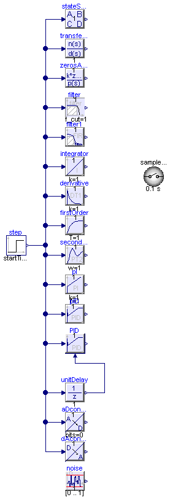

| Name | Description |
|---|---|
| TestComponents | test all Controller blocks |

| Type | Name | Default | Description |
|---|---|---|---|
| Real | w | 10 | |
| Real | D | 0.1 |
model TestComponents "test all Controller blocks" import Modelica_LinearSystems2; extends Modelica.Icons.Example; parameter Real w=10; parameter Real D=0.1;Modelica.Blocks.Sources.Step step( startTime=0.5, height=1.2, offset=0.2); Modelica_LinearSystems2.Controller.StateSpace stateSpace( x_start={0.1,0}, initType=Modelica_LinearSystems2.Controller.Types.InitWithGlobalDefault.InitialState, system( A=[0,1; -w*w,-2*w*D], B=[0; w*w], C=[1,0], D=[0]), blockType=Modelica_LinearSystems2.Controller.Types.BlockTypeWithGlobalDefault.UseSampleClockOption); Modelica_LinearSystems2.Controller.TransferFunction transferFunction(system(n= {1,2}, d={1,2,3}), blockType=Modelica_LinearSystems2.Controller.Types.BlockTypeWithGlobalDefault.UseSampleClockOption); Modelica_LinearSystems2.Controller.ZerosAndPoles zerosAndPoles(system( n1={1}, n2=fill( 0, 0, 2), d1=fill(0, 0), d2=[1,1; 1,1]), blockType=Modelica_LinearSystems2.Controller.Types.BlockTypeWithGlobalDefault.UseSampleClockOption); inner Modelica_LinearSystems2.Controller.SampleClock sampleClock( sampleTime=0.1, initType=Modelica_LinearSystems2.Controller.Types.Init.InitialState, blockType=Modelica_LinearSystems2.Controller.Types.BlockType.Continuous); Modelica_LinearSystems2.Controller.Filter filter; Modelica_LinearSystems2.Controller.FilterFIR filter1; Modelica_LinearSystems2.Controller.Integrator integrator; Modelica_LinearSystems2.Controller.Derivative derivative; Modelica_LinearSystems2.Controller.FirstOrder firstOrder; Modelica_LinearSystems2.Controller.SecondOrder secondOrder; Modelica_LinearSystems2.Controller.PI pI; Modelica_LinearSystems2.Controller.PID pID(initType=Modelica_LinearSystems2.Controller.Types.InitWithGlobalDefault.InitialOutput); Modelica_LinearSystems2.Controller.LimPID PID(initType= Modelica_LinearSystems2.Controller.Types.InitWithGlobalDefault.NoInit); Modelica_LinearSystems2.Controller.UnitDelay unitDelay; Modelica_LinearSystems2.Controller.ADconverter aDconverter( y_max=1000, y_min=-1000, bits=0); Modelica_LinearSystems2.Controller.DAconverter dAconverter( y_max=1000, y_min=-1000, bits=0); Modelica_LinearSystems2.Controller.Noise noise(y_min=0, y_max=1); equationconnect(step.y, stateSpace.u[1]); connect(transferFunction.u, step.y); connect(zerosAndPoles.u, step.y); connect(filter.u, step.y); connect(filter1.u, step.y); connect(integrator.u, step.y); connect(derivative.u, step.y); connect(firstOrder.u, step.y); connect(secondOrder.u, step.y); connect(pI.u, step.y); connect(pID.u, step.y); connect(PID.u_s, step.y); connect(unitDelay.u, step.y); connect(aDconverter.u, step.y); connect(dAconverter.u, step.y); connect(unitDelay.y, PID.u_m); end TestComponents;